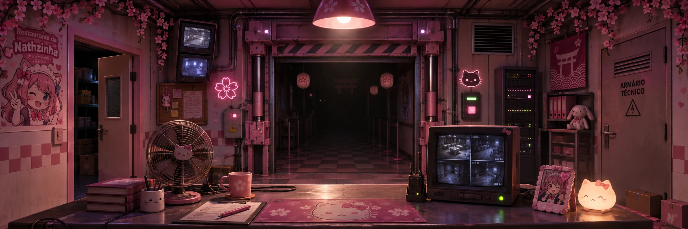

ESCRITÓRIO DE SEGURANÇA / CONTROLE
MODO DE REFERÊNCIA
CAM 04 · CENÁRIO CINEMATOGRÁFICO AINDA NÃO INCLUÍDO
RECCAM 01
Lojinha
CÂMERA CONECTADA • NENHUM ANIMATRÔNICO EM CAMPO
:3✿
NATHZINHANIGHT SECURITY SYSTEM
12 AM
NOITE 01ENERGIA100%
USONORMAL
✿
6:00 AM
O turno terminou.
Primeira noite concluída. Ainda não há animatrônicos nesta versão exploratória.